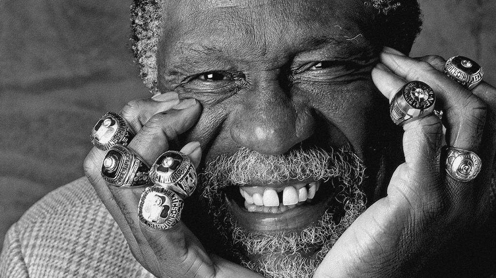
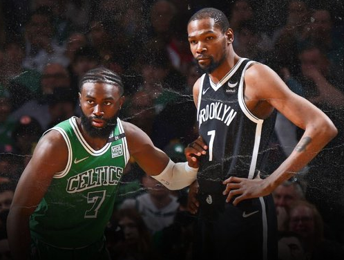
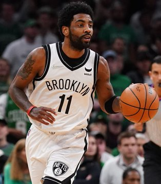
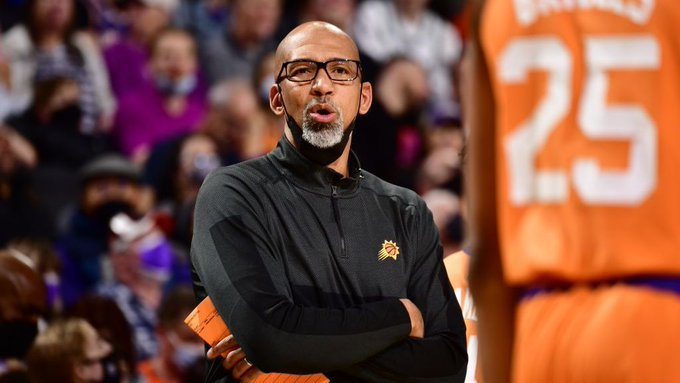
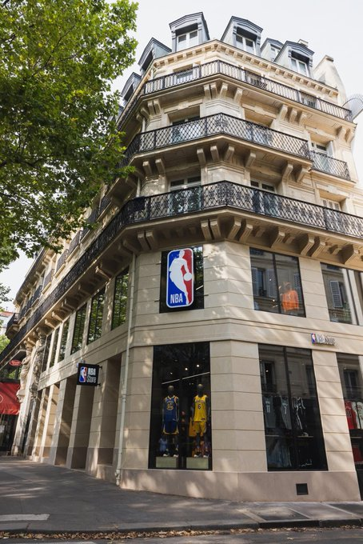
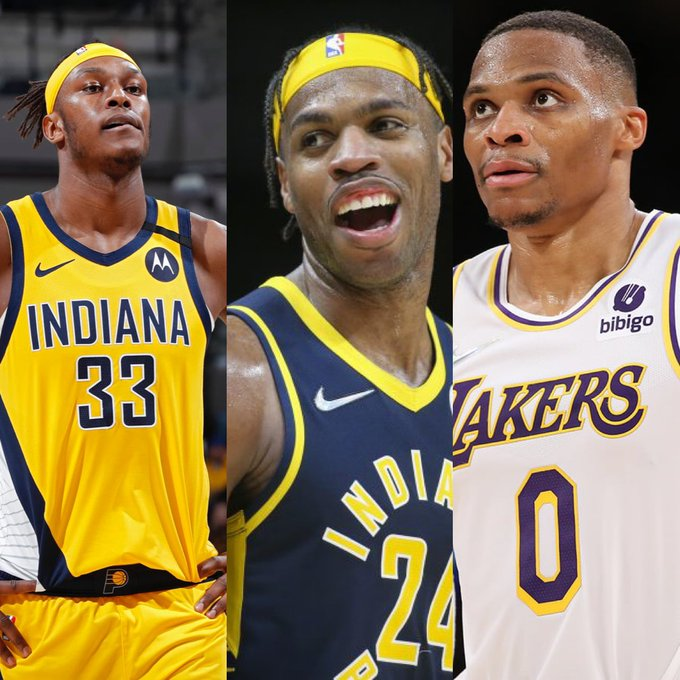
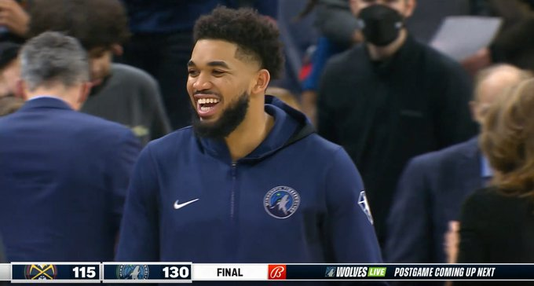
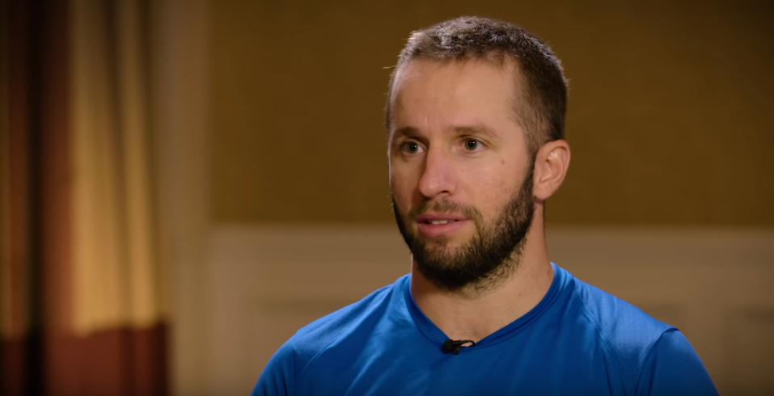
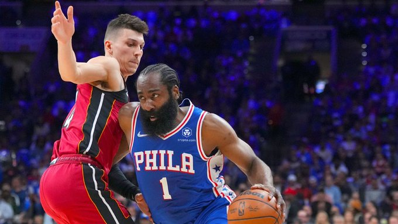

Bill Russell est décédé à l’âge de 88 ans : la NBA perd l’un de ses visages, le plus victorieux, bouillonnant d’humanité

Les Boston Celtics ont tenté de récupérer KD en proposant Jaylen Brown et d'autres assets ... mais les Nets ont refusé et soumis une contre-proposition !

Les Lakers ne feront pas de transaction pour Eric Gordon ou Buddy Hield tant qu'ils ne seront pas absolument certains qu'un échange de Kyrie n'aura pas lieu.

Monty Williams, entraîneur des Phoenix Suns, accepte une prolongation de contrat à long terme

Le premier NBA Store français ouvre aujourd’hui à Paris ! Pour tous les fans NBA, ça se passe ici : 20 Boulevard Saint-Michel, 75005

Les Lakers et les Pacers ont discuté d'un échange qui enverrait Myles Turner et Buddy Hield aux Lakers, et Russell Westbrook et une compensation de draft à Indiana.

Karl-Anthony Towns déjà fan de son association avec Rudy Gobert : « Ses forces sont mes faiblesses et ses faiblesses sont mes forces »

"Fier mari d'Ayesha Curry. Fier fils de Dell Curry. Fier papa des... Boston Celtics" - Stephen Curry Qu'attendre pour la saison prochaine ?
JJ Barea raccroche les sneakers à 38 ans : clap de fin pour le joueur historique des Maverick

James Harden et les Sixers ont conclu un accord de deux ans et 68,6 millions de dollars.

MAC MCCLUNG a accepté un contrat d'un an avec les WARRIORS.